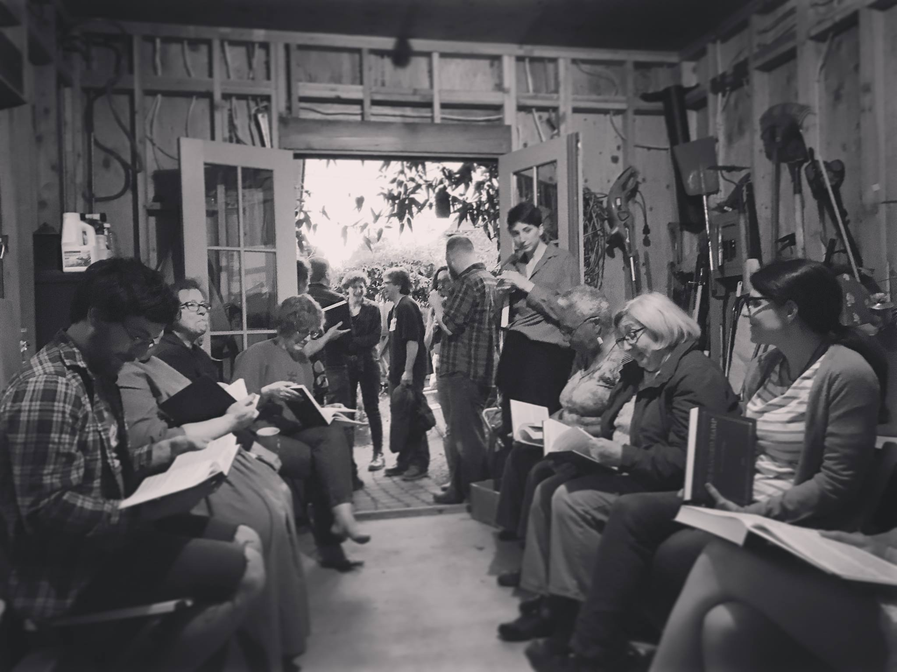

Portland Sacred Harp
About
Shape note singing is one of America’s oldest musical and social gathering activities.
All are welcome to sing, regardless of experience or ability. Portland Sacred Harp events do not have any membership requirements or religious or political affiliations. Come as you are and sing for yourself!
"It was a strange sound, raw and wild and hoary, yet at the same time, familiar somehow – a great, aching lamentation that stopped people walking by in the hallway outside cold.It was as if voices from a previous century had started speaking again. " --The Oregonian
"…penetrating sound that gets under your skin…that primal scream of music that is Sacred Harp singing at its best." --The Willamette Week
Watch the OPB feature, practice singing online with the Bremen Sacred Harp Robot, or visit fasola.org.
Calendar
Regular Singings
Third Thursdays: Shenandoah Harmony, 7-9 PM at the common room for 2515-2525 SE Ankeny.
Look for Little Free Library box. Take the alley to your right (east side) as you’re facing the building. The common room is the first door on the left.
Note: This is the most likely singing to be rescheduled, check the calendar above for the most up-to-date information.
First and Third Sundays: First Sunday Christian Harmony, Third Sunday Blue Book, 4-6 PM at Waverly UCC, 3300 SE Woodward St, Portland
Second and Fourth Sundays: From the Denson book, 4-6 PM at McMenamins Kennedy School, 5736 NE 33rd Ave, Portland, OR. Singing is in the Community Room at the SE corner of the main building.
All Day Singings
We host two weekend-long singings annually. See here for details on the next upcoming all day.
Our Convention is held on the third Sunday in October and Saturday before. We sing from the Denson Sacred Harp.
Our Double All Day is held on the first Sunday in May and Saturday before. We sing from the Denson Sacred Harp on Saturday and from the Christian Harmony on Sunday.